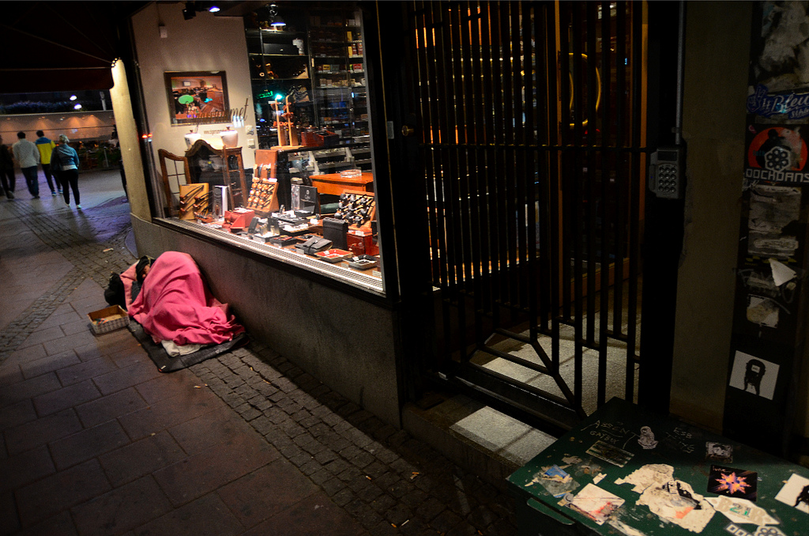

Guest post: How can gathering data help curb social exclusion?
ODI Associates Mar Santamaria Varas and Pablo Martinez Diez from 300.000 Km/s, discuss how analogue-to-digital tools can improve large-scale data collection processes in cities, helping to combat homelessness and social exclusion

Homeless CC BY 2.0, uploaded by J.RISTANIEMI.
by Mar Santamaria Varas and Pablo Martinez Diez
Open data for cities has rapidly evolved. Data on almost every city – from demographics and employment to transport and health – has become much more accessible. This access, as well as the ability to use and share the data, will bring huge potential for understanding urban problems and for designing more sustainable and equitable cities.
As a result, we are experiencing an open data revolution: technological difficulties regarding data infrastructure and data formats have been mostly overcome, as well as a lack of legal frameworks in most high income countries or the lack of willingness of public bodies and private companies to share their data.
However, the lack of data in certain areas is still a serious problem that can result in a ‘data divide’. Extreme poverty, for example, is an issue yet to be mapped or quantified in ways that people can access and use.
As homeless people are not traditionally included in censuses, they tend to be relatively invisible to social researchers. Arguably, one of the first steps towards rectifying this and helping to prevent social exclusion is the quantification of homelessness. Having the means to measure the true extent of the problem is key to developing initiatives to help overcome it, both for government and civil society.
But how would this work in practice? Official household surveys, which tend to be slow and expensive, are one way. But there are other ways of mapping poverty which utilise data and are both quicker and more efficient.
For example, nighttime satellite imagery has been used to estimate the number of people who live in darkness because they cannot afford to pay for electricity. Recent findings also demonstrate the potential of analysing daytime images in more impoverished areas, where light is already low, to enhance results.
Still, we could affirm that the best way to count rough sleepers in urban areas is to comb the streets, as it can generate more accurate data. Major cities such as Los Angeles, London and Barcelona recruit volunteers, either every year or every two years, to count the amount of homeless people sleeping rough in one night. The count is a critical supplement to shelter statistics and official reports, and also helps to inform design and determine the funding of programmes.
The Arrels Foundation – which works to support homeless people in Barcelona – organises the city’s annual rough-sleeping count by mobilising nearly 1,000 volunteers. The challenge of such a large-scale survey is to divide the city into equal areas according to the number of volunteers, to collect the information in a structured way and to process it for a further analysis.
Open Papers, developed by urban design firm 300.000 Km/s in collaboration with Arrels, was developed in response to the lack of existing workflows and tools to organise, monitor and manage such large-scale surveys.
The project relies on the power of paper maps and forms to collectively gather data. Using mobile phones in large-scale surveys can lead to a lack of information due to GPS inaccuracy or the misuse of technology by volunteers.
In the wake of other emerging analogue-to-digital tools (e.g. Field Papers, Walking Papers), Open Papers allows any organisation to subdivide their city into ad hoc zones to generate an automatic paper atlas for each team of volunteers. This contains a map of the area to explore and a worksheet to collect information and digitise it via image-recognition technology.
Our hope for Open Papers is that even though it has been developed for this specific purpose, it will be used for similar processes in different areas such as the participatory design of cities and citizen science projects.
The first pilot of the tool (available on Github) was successfully launched during the night of the rough sleeping count in Barcelona on 18 May 2016. The results were brilliant - 930 volunteers, organised in 216 groups, counted 943 people sleeping rough and 1,973 in shelters.
This year the count was managed by Barcelona City Council with support from local stakeholders that had previously been leading the project. Unfortunately, after the survey, the data obtained was only partially shared and not available in any open data format to be used by citizens or the NGO community.
The main challenge of Open Papers is therefore to ensure the proper use of the platform to generate open data. The platform offers within the same product a software and a database, something which open licences treat separately (software (Open Source Initiative), creative contents (Creative Commons licenses) or databases (Open Data Commons)). A third party could eventually use the tool to make a survey with the participation of the community and decide not to share or enable the reuse of the information.
We believe that licensing crowdsourced data under open data standards is still a major issue to be faced and we hope this tool, besides fighting social exclusion, will help in this long journey to having better data.
If you have ideas or experience in open data that you'd like to share, pitch us a blog or tweet us at [@ODIHQ](https://twitter.com/odihq “@ODIHQ”).